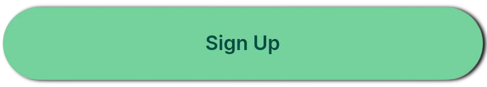
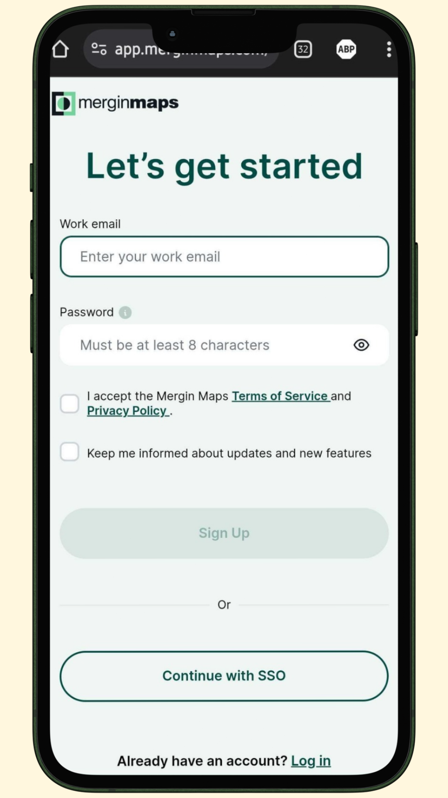
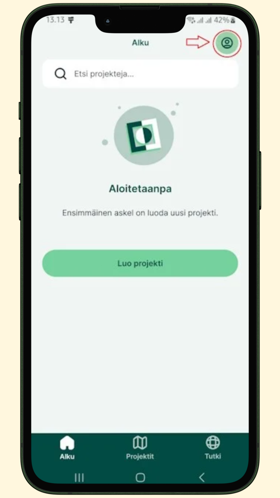
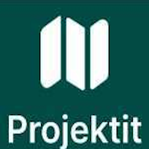

Projektin lataaminen
Projektin lataaminen mobiilisovellukseen (uudet käyttäjät)
Kun olet liittynyt uudeksi testaajaksi lomakkeen avulla, saat sähköpostiisi seuraavien päivien aikana linkin:

💡 HUOM!
Tarkista roskapostikansiosi, jos vahvistussähköposti ei näy postilaatikossasi.
- Klikkaa linkkiä ja rekisteröidy palveluun. Paina lopuksi 
{kind=link}

2. Liity työtilaan napauttamalla Join workspace
{kind=link}

3. Avaa tämän jälkeen MerginMaps -sovellus puhelimessasi ja napauta oikean yläkulman ikonia:

4. Kirjaudu tämän jälkeen juuri luomillasi tunnuksillasi sisään:
{kind=link}

5. Napauta tämän jälkeen alareunan  ja lataa eip-peltomappi- projekti
{kind=link}
Avaa video
Uusimman projektitiedoston lataaminen mobiilisovellukseen (vanhat käyttäjät)
-
Avaa Mergin Maps- mobiilisovellus
-
Valitse alapaneelistaa ja napauta peltomappi_test_version_3_oma_nimi- projektia
- Napauta
 , jonka jälkeen projekti ladataan laitteeseesi
, jonka jälkeen projekti ladataan laitteeseesi - Kun lataus on valmis napauta projektia ja pääset aloittamaan projektin käyttämisen.
Avaa video
Projektin lataaminen tietokoneelle QGIS-työpöytäsovellukseen
💡 Info
Mergin Maps mobiilisovelluksen käyttö ei edellytä QGISin käyttöä. Sitä voi käyttää täysin itsenäisesti, mutta jos haluat laajemmat työkalut käyttöön ja haluat tarkastella projektia, lisätä georeferoituja karttoja ja muokkailla tallentamiasi tietoja tietokoneella ne onnistuvat parhaiten QGISin avulla.
💡 Info
QGIS on avoimen lähdekoodin paikkatieto-ohjelmisto, jonka avulla voit tarkastella, muokata ja analysoida paikkatietoaineistoja. Kun lataat projektin QGISiin, näet peltolohkosi kartalla ja voit käsitellä niihin liittyviä ominaisuustietoja myös ilman verkkoyhteyttä.
QGISin lataaminen ja asentaminen
Mene QGISin viralliselle sivulle: https://qgis.org/
Valitse Download Now ja lataa versio käyttöjärjestelmällesi (Windows, Mac, Linux):
{kind=link}
Asenna QGIS seuraamalla asennusohjeita.
MerginMaps-lisäosan asentaminen QGISiin
-
Avaa QGIS
-
Valitse ylävalikosta Lisäosat → Hallinnoi ja asenna lisäosia.
-
Kirjoita hakukenttään Mergin.
-
Valitse Mergin Maps ja klikkaa Asenna lisäosa.
{kind=link}
Kun asennus on valmis, lisäosa löytyy QGISin selain ikkunasta, jonka otsikko on Mergin Maps.
Kirjautuminen MerginMaps-lisäosaan
Avaa lisäosa valikosta: Lisäosat → Mergin Maps → Configure MerginMaps plugin -ikonista.
{kind=link}
Tämän jälkeen ohjelma pyytää asettamaan uuden päätodennussalasanan QGISiin. Anna siihen haluamasi salasana ja laita se talteen.
{kind=link}
Kirjaudu sisään Mergin-tililläsi.
Valitse Save credentials, jos haluat että ohjelma muistaa tunnuksesi seuraavilla kerroilla.
{kind=link}
Kun kirjaudut, lisäosa yhdistyy Mergin-tiliisi, ja voit nähdä projektisi listattuna.
Projektin lataaminen QGISiin MerginMaps-lisäosalla
-
Avaa Mergin Maps -paneeli QGIS:ssä vasemman laidan selainosiosta.
-
Paneelissa näet kaikki projektisi.
-
Valitse projekti, jonka haluat ladata.
-
Klikkaa Download project (Lataa projekti).
-
Valitse kansio, johon projekti tallennetaan. Laita mieleen tämä sijainti. Tähän samaan sijaintiin tallennetaan myöhemmin georeferoidut kuvat.
-
QGIS avaa projektin ja siihen liittyvät aineistot automaattisesti.